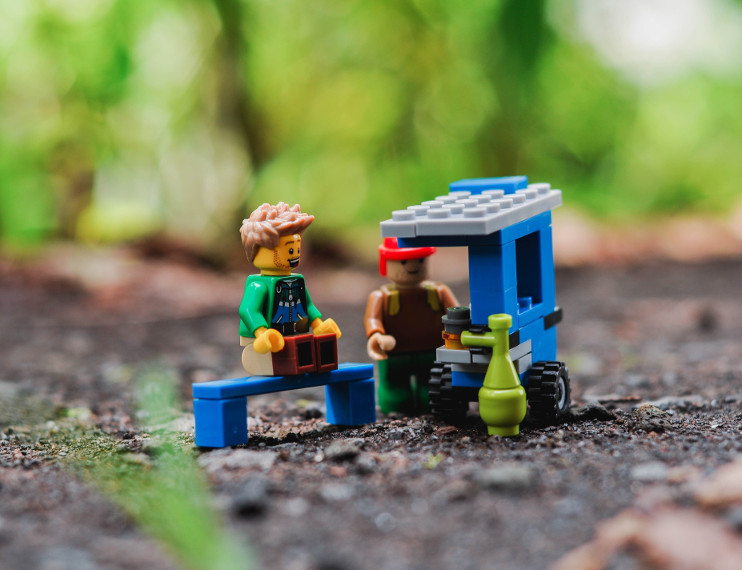

<div style="display: flex; flex-direction: column; padding-bottom: 2rem; align-items: center;">
    <h1 style="font-size: 3rem;">Agility Kata</h1>

    

    <ul class="fragment">
        <li>Focus on incremental work</li>
        <li>Requirements become known in increments</li>
        <li>Usually focus on building a complete application</li>
        <li>We focus on slices due to time constraints</li>
    </ul>
</div>